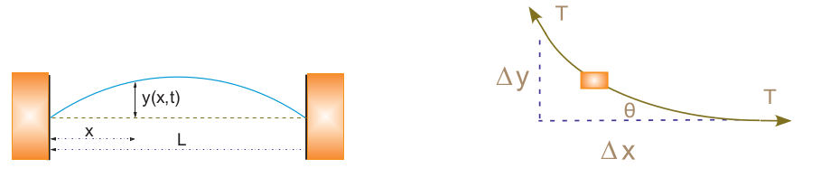
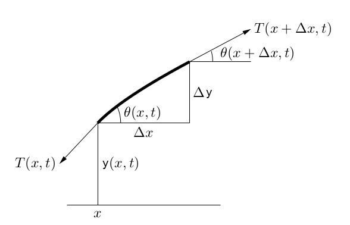

Önce ip üzerinde titreşimlerin hareketi sonucu olan dalga denklemini türetelim. Bu türetimin bir şeklini [1]'de görmüştük, şimdi [2,3,4] bazlı olarak tekrar görelim.
Bir ipte dalga onun salınımı ile oluşacak, ve bu salınım sırasında bir anda, tek bir fotoğraf karesinde görüntü alt soldaki gibi olabilir,

İp iki tarafından hareket etmeyen yerlere bağlanmış (duvar mesela) uzunluk $L$, ip materyelinin yoğunluğu $\rho$, ki bu tüm ipin kütlesi bölü uzunluğu olarak ta görülebilir, bu örnekte sabit, ipin gerginliği kuvvet olarak $T$, bu da sabit, ve yerçekimi kuvvetine göre çok daha fazla böylece yerçekim ivmelenmesi $g$'yi yok sayabiliyoruz. Sürtünme yok. Tek boyutta bakıyoruz, $y(x,t)$ ipin bir $x$ noktasındaki dikey yer değişimini gösteriyor.
Denklemi ortaya çıkartmak için aslında Newton'un $F=ma$'sından daha fazlasına ihtiyacımız yok. Üst sağdaki resimde gösterildiği gibi tek bir sonsuç ufak bölgeye odaklanırsak, ya da alt resimde olduğu gibi,

$F$ için gereken net kuvveti ipin iki yanyana noktası arasındaki gerginliğin dikey bileşenlerinin farkı olarak görebiliriz, yani $T(x+\Delta x,t)$ ve $T(x,t)$ kuvvetlerinin dikey bileşen farkı. İki noktadaki acılar da $\theta(x,t)$ ile gösteriliyor, $x+\Delta x$'teki acı $\theta(x+\Delta x)$. Bu dikey bileşenlerin farkını, ya da tüm $y$ kuvvetlerinin toplanını o zaman
$$ \sum F_y = T(x+\Delta x,t) \sin\theta(x+\Delta x,t) - T(x,t) \sin\theta(x,t) $$
ile hesaplayabiliriz. Modeldeki faraziyeler isiginda biliyoruz ki $y/L$ cok kucuk, o zaman $\theta$ cok kucuk. Demek ki sinus ifadelerini basitlestirebiliriz, [5]'ten biliyoruz ki
$$ \sin\theta \approx \tan\theta = \partial y / \partial x $$
Demek ki
$$ \sum F_y = T \frac{\partial y}{\partial x} \bigg\vert_{x+\Delta x} - T \frac{\partial y}{\partial x} \bigg\vert_{x} $$
Son geldiğimiz noktada birinci türevler üzerinden bir $x$ farklılığı görüyoruz, bu bize bir türev işlemini daha hatırlatıyor, eğer $\Delta x$ ile bölünme de olsaydı, o zaman ikinci türev elde ettik diyebilirdik,
$$ \frac{ T \frac{\partial y}{\partial x} \bigg\vert_{x+\Delta x} - T \frac{\partial y}{\partial x} \bigg\vert_{x} }{\Delta x} \approx T \frac{\partial^2 y}{\partial x^2} $$
Fakat önemli değil, biraz masajlama yaparsak,
$$ T \frac{\partial y}{\partial x} \bigg\vert_{x+\Delta x} - T \frac{\partial y}{\partial x} \bigg\vert_{x} \approx T \frac{\partial^2 y}{\partial x^2} \Delta x $$
İstenilen sonucu elde ederiz,
$$ \sum F_y \approx T \frac{\partial^2 y}{\partial x^2} \Delta x $$
Diğer taraftan $F=ma$ eşitliğinin sağ tarafına bakarsak, baktığımız ufak bölge için kütle $\rho\Delta x$, yatay ivmelenme ise $y$ yer değişiminin zamana göre ikinci kısmi türevi,
$$ \sum F_y = \rho \Delta x \frac{\partial^2 y}{\partial t^2} $$
Bu son iki denklemi birbirine eşitlersek, $\Delta x$'ler iptal olur,
$$ T \frac{\partial^2 y}{\partial x^2} = \rho \frac{\partial^2 y}{\partial t^2} $$
Sabitleri sağ tarafa taşırsak, ve $c = \sqrt{T / \rho}$ tanımı üzerinden,
$$ \frac{\partial^2 y}{\partial x^2} = \frac{1}{c^2}\frac{\partial^2 y}{\partial t^2} $$
Dalga denklemini elde etmiş olduk.
Denkleme yakından bakarsak onun bir kısmı türevsel denklem (PDE) olduğunu görürüz. İki tane bağımsız değişken temel alınıyor, $x,t$. Ayrıca denklem 2. derece, çünkü ikinci türevi içeriyor. Bu bilgiler denklemi çözmek için önemli.
Çözümde bir başlangıç şartı gerekli çünkü diferansiyel denklemleri "entegre ederken" daha doğrusu ileri doğru geçen zamanda hesaplarken bir başlangıç noktası gerekiyor, bunun için bir teli kaldırıp (geçici bir süre üçgen haline getirip) oradan bıraktığımızı düşünebiliriz, ki bu üçgen şekli alttaki gibi modellenebilir,
$$ y(x,t=0)=\begin{cases} 1.25 x/L , &x\leq 0.8 L ,\\ (5-5x/L), &x> 0.8 L, \end{cases} $$
İkinci bir başlangıç şartı daha lazım, 2. derece başlangıç şartı bu. Teli, ipi gerip üçgen yaptım ama sonra durup tekrar bıraktım, bu da bir başlangıç şartı, durağan durumdan başlama şartı.
$$ \frac{\partial y} {\partial t}(x,t=0) =0 $$
Çözüme bu şartlarla başlayabilirdik ama baştaki problem tanımını hatırlarsak ek bazı şartlar daha koymuştuk, bu şartlar, kısıtlamalar her an için geçerli, ipler iki ucundan (hareket etmeyen) duvarlara bağlı.
$$ y(0,t) \equiv 0, \quad y(L,t) \equiv 0 $$
[analitik çözüm atlandı]
Yaklaşıksal hesap için $x,t$ eksenleri düşünebiliriz, ve bu eksenlerde sadece belli noktalardaki hesaplar yapılacak, $x$ için aralıklar $\Delta x$ genişliğinde, $t$ için $\Delta t$ genişliğinde, aralık büyüklüğünü biz tanımlayacağız. Yani hesap noktaları $i=1,2,3,...$ için $i \Delta t$'de, $x$ için $j=1,2,..$ ile $j \Delta t$'de.
Yaklaşıksallıkta bir diğer kullanılacak teknik merkezi farklılıklar, burada $x$ için sola/sağa, $t$ için yukarı/aşağı olacak şekilde iki Taylor açılımı yapıyoruz,
$$ y(x +\Delta x, t) = y(x,t) + \frac{\partial U}{\partial x}\Delta x + \frac{1}{2} \frac{\partial^2 U}{\partial x^2}(\Delta x)^2 + \cdots $$
$$ y(x -\Delta x, t) = y(x,t) - \frac{\partial U}{\partial x} \Delta x + \frac{1} {2} \frac{\partial^2 U}{\partial x^2} (\Delta x)^2 - \cdots $$
$$ y(x, y +\Delta t) = y(x,t) + \frac{\partial U}{\partial t}\Delta y + \frac{1}{2} \frac{\partial^2 U}{\partial t^2}(\Delta t)^2 + \cdots $$
$$ y(x, y -\Delta t) = y(x,t) - \frac{\partial U}{\partial t} \Delta t + \frac{1} {2} \frac{\partial^2 U}{\partial t^2} (\Delta t)^2 - \cdots $$
Noktalı yerlerdeki terimleri yok sayıyoruz (2. derece yaklaşıklama yapmış olduk yani, bu önelmi, yaklaşı temsilin kuvvetini gösteriyor bir anlamda), sonra her değişkenin iki açılımını birbiri ile topluyoruz. Toplama sonrası tek sayı terimlerinin iptal olduğunu görürüz, ve kalanlar,
$$ \frac{\partial^2 y(x,t)}{\partial x^2} \simeq \frac{y(x+\Delta x,t)+y(x-\Delta x,t)-2 y(x,t)}{(\Delta x)^2} $$
$$ \frac{\partial^2 y(x,t)}{\partial t^2} \simeq \frac{y(x,t+\Delta t) +y(x, y-\Delta t)-2 y(x,t)}{(\Delta t)^2} $$
olacaktır. İndisler üzerinden belirtirsek,
$$ \frac{\partial^2 y }{\partial t^2} \simeq \frac{y_{i,j+1}+y_{i,j-1}-2 y_{i,j}}{(\Delta t)^2}, \quad \frac{\partial^2 y}{\partial x^2} \simeq \frac{y_{i+1,j}+y_{i-1,j}-2 y_{i,j}} {(\Delta x)^2}. $$
Üstteki formülleri dalga denklemindeki yerlerine koyarsak,
$$ \frac{y_{i,j+1}+y_{i,j-1}-2 y_{i,j}} {c^2 (\Delta t)^2} = \frac{y_{i+1,j}+y_{i-1,j}-2 y_{i,j}} {(\Delta x)^2} $$
Tabii dikkat edersek geçmiş $j-1$ ve gelecek $j+1$ birbirine karışmış durumda, bize lazım olan geleceğin hesabının eşitliğin sol tarafında olması geri kalan her şey sağda olacak şekilde tekrar düzenlersek,
$$ y_{i,j+1} = 2 y_{i,j}-y_{i,j-1}+ \frac{c^2 } {c'^{2}} \left [ y_{i+1,j}+y_{i-1,j}-2 y_{i,j}\right], \quad c' { = } \frac {\Delta x}{\Delta t} \qquad (1) $$
Hesap için üstteki resmi hatırlayalım, $i,j+1$ hücresine dört diğer hücreden ok çizilmiş, aslında bu oklar üstteki formülün hesabını anlatıyor, o anki $t$ zamanından üç hesap ve geçmişten $i,j-1$ hesabına bakarak gelecekteki değeri hesaplıyoruz. Bu hesaplama çok verimli olacak çünkü herhangi bir anda hafızada tutulması gereken $y(i,j)$ haricinde sadece üç tane değer var.
Son bir problem başlangıç değerleriyle alakalı, resimdeki bilinmesi gereken o üç hücrenin başlangıç $j=1$ anında olduğunu düşünürsek, ve $j=2$'yi hesaplamamız gerekiyor, eksi zamana doğru bir gidişat lazım, yani $j=-1$ zamanı. Başlangıç bilgisi $j=1$ var, ama $j=-1$ yok. Buradaki bilgiyi nasıl alacağız?
Denklemsel olarak bir ek koşul daha ekleyerek, ilk başta hem teli çekip üçgen haline getirmiştik, bir de başlangıç anında telin hızı sıfırdır diyeceğiz. Bu mantıksız değil, tel çekildi, tutuluyor.. hareket yok. Denklem olarak $\partial y / \partial t(x,0)$ sıfır diyeceğiz. Sonra bu denklemin merkezi farklılık açılımını yapacağız ve oradan gelen eşitlikleri ana (1)'e sokarak sadece $j=2$ için özel bir formül elde etmeyi umuyoruz.
$$ \frac{\partial y}{\partial t}(x,0) \simeq \frac{y(x, \Delta t)- y(x, -\Delta t)}{2\Delta t}=0, \ \Rightarrow \ y_{i, 0} = y_{i,2} $$
[devam edecek]
Kaynaklar
[1] Bayramlı, PDE, Dalga Denklemini Türetmek
[2] Landau, Landau Computational Physics Course, Video Lectures, https://www.youtube.com/playlist?list=PLnWQ_pnPVzmJnp794rQXIcwJIjwy7Nb2U
[3] Landau, Computational Physics
[4] Feldman, Math 256, Differential Equations, Lecture Notes http://www.math.ubc.ca/~feldman/m256/
[5] Bayramlı, Normal Diferansiyel Denklemler Ders Notlari, Ekler, Trigonometri